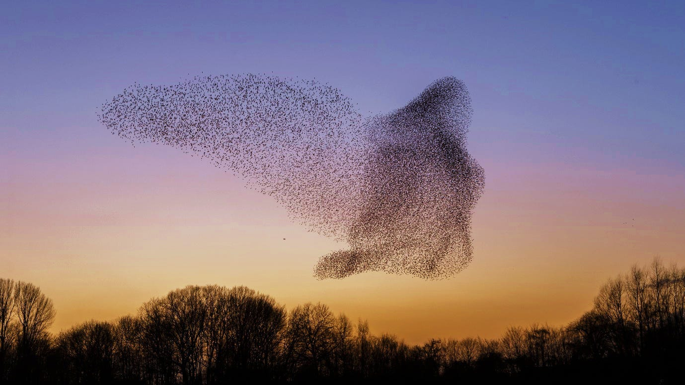

Complex Systems
Four ideas from the science of complex systems that changed how I think about software, social networks, marketing, and AI.
Overview
There exists a class of systems that disrupts the way that many engineers are trained to think. You can understand every component of a system individually (every line of code, every neuron, every interaction) and still have no idea what the system will do. This is not a result of randomness, but rather because the system is complex.
Complex systems are defined by diverse and interconnected elements whose behaviour cannot be determined by examining each part in isolation. This idea was not developed by any one person; instead it gradually evolved over a century through various discoveries. In the 1890s, Henri Poincaré was working on the three-body problem, which consisted of computing the behaviour and relation of three objects (planets) while experiencing mutual gravity. Poincaré proved that even a small deterministic system can still show non-linear behaviour. Poincaré's unpredictability was then made quantitative by Edward Lorenz in the 1960s, and the field finally got its name in the 1980s from a group of economists, physicists, and biologists at the Santa Fe Institute. That meant complex systems had finally become its own field, with shared concepts that could explain almost anything.
I want to introduce the four core concepts from the science of complex systems that changed my perspective on important things like software, social networks, marketing, AI, and basically everything else. The craziest part about all of this is that after decades of research and development in this field, the math is deceptively simple for something that seems so complex.
Emergence
The network of parts results in the system as a whole operating in unexpected ways, where the whole becomes something entirely new, not merely the sum of its parts. This is called emergence.
Imagine a cloud of thousands of birds gathered in the sky, moving in perfect synchrony; it almost looks choreographed but isn't. There's no plan, nor any network of communication. How can such coordinated behaviour emerge? Simple enough: the birds follow three rules: do not collide with one another, stay close, and match each other's speed. With all of the thousands of birds applying the exact same rules and routines, we come across emergence.

Phase Transitions
Draft in progress.
Self-organized Criticality
Draft in progress.
Power Laws
Draft in progress.
This piece is still being written. More to come.